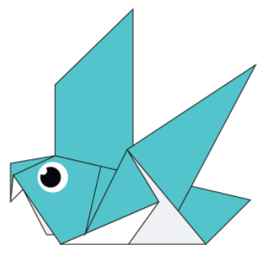

Interesting facts about Camels
- Camels ears are furry
- Camels can mone easily across the sand because
of their specially designed feet - When they find water, they will drink as much as they can.

Interesting facts about Pandas
- Pandas reside in forests that are rich in coniferous leaves
and dense under-stories of bamboo - Pandas have a distinct black and white coat that is dense
and thick to protect against cooler climates - Their strong jaws and teeth help it to successfully chew
tough bamboo, which comprises 99 percent of their diet.

Interesting facts about Chameleons
- Male and female chameleons have different coloring.
Female and juvenile chameleons are tan-brown
with bits of pink or orange, while adult males have varying combinations
of bright red, green, blue and yellow - Unlike other animals, chameleons continue to grow throughout their lives.
As their old skin gets too small,
they will shed it in bits and pieces - Chameleons live in Madagascar, Africa, Spain, Portugal and Asia in rain forests

Interesting facts about Pigeons
- Pigeons are incredibly complex and intelligent animals.
They are one of only a small number of species to pass the ‘mirror test’
– a test of self recognition - They can also recognise each letter of the human alphabet,
differentiate between photographs, and even distinguish different humans
within a photograph. - Pigeons are highly sociable animals.
They will often be seen in flocks of 20-30 birds.
Interesting facts about Bears
- Bears Have Lived on Earth for
38 Million Years. For over 30 million years,
bears in one form or another have roamed the Earth - The Koala Bear Is Not a Bear –
There Are No Bears in Australia - The Last Bears in Africa Went Extinct in the Late 1800s